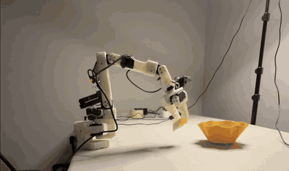
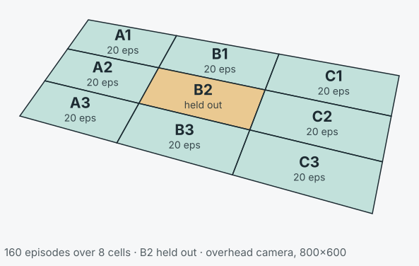
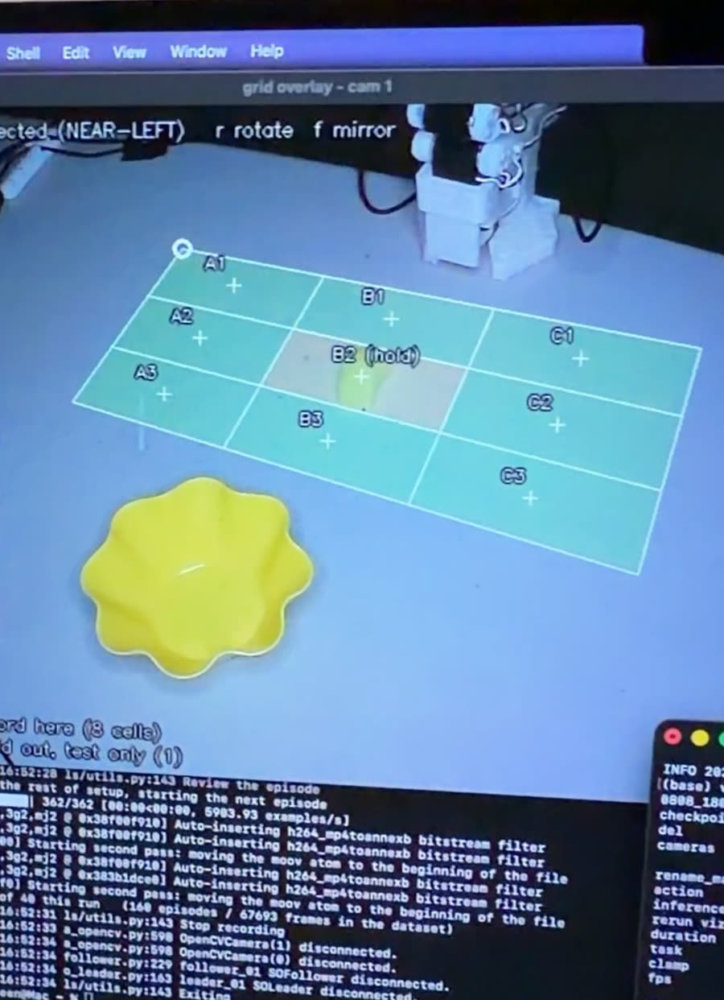
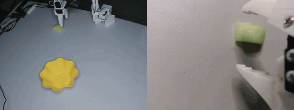

Open hardware · Apache-2.0
A vision-language-action stack for contact-rich robot manipulation on sub-$300 hardware, working toward on-device tactile inference.

20 trials cannot separate these two — the confidence intervals overlap heavily. What they establish is that both work.
Tactile VLA models exist, but the published work runs on ~$30k research arms. This project aims to be a complete, reproducible, open-source tactile-VLA reference stack that runs on hardware costing under $300 — the arm, the touch sensing, the dataset format, the fusion method, and the measured results, in one place.
That is roughly a 100× reduction in hardware cost. Reading touch off the servos the arm already has is a large part of why: it keeps the touch channel at zero marginal cost.
To be precise about the claim: this is not the first tactile-VLA. Tactile-VLA, TacVLA, and TacFiLM came first. The intended contribution is the integration at the low-cost end — and it does not exist yet. What exists today is the baseline it has to beat.
Every episode is a human driving the follower arm through the task on the leader arm, then resetting the scene by hand: reposition the noodle into the next cell, rotate it to the next yaw in the sweep, start the next take.
Four rounds walking the perimeter A1→B1→C1→C2→C3→B3→A3→A2, five episodes per cell per round. The walk order reverses on rounds 2 and 4 so cell identity does not alias with fatigue and drift within a round.
This is the part no architecture choice can substitute for, and it is most of the wall-clock cost of the project.
Four trials filmed end to end, each narrated with the workspace cell called out before the run. All four succeeded. B2 is the held-out cell — it appears in none of the 160 training episodes.
These are demonstrations, not the scored trials — the 20-trial runs were tallied by hand without video.
Teleoperated episodes spread over a 3×3 grid projected onto the table by homography from four clicked corners. Eight cells were recorded at exactly 20 episodes each. Within every cell the object's yaw sweeps the full ±90° range in 10° steps, so no cell is a single memorised pose.
The centre cell, B2, was never recorded — it exists only to be tested against.
| Episodes | 160 |
|---|---|
| Frames | 67,693 |
| Rate | 30 fps |
| Cameras | 800×600 overhead, 640×480 wrist |
| Format | LeRobot v3.0 |

This is the result worth reporting, more than either success rate. Rather than matching the nearest trained trajectory, both policies interpolated into an unseen region of the workspace — on a 160-episode dataset.


The overhead camera loses the object behind the gripper at exactly the moment contact matters. The wrist camera is what keeps the grasp legible.
That occlusion is also the argument for touch: a channel that still reports when vision is blocked. Which is Phase 3, and is not built.
| Layer | Component | State |
|---|---|---|
| Arm | SO-101 leader + follower, Feetech STS3215 | working |
| Vision | Overhead 800×600 + wrist 640×480, 30 fps | working |
| Policy | ACT and SmolVLA-450M via LeRobot | working |
| Compute | RTX 3060 training; Apple Silicon / MPS inference | working |
| Touch | Servo load (Present_Load, STS3215 reg. 60) | not integrated |
| Fusion | FiLM conditioning, token-concat first | not built |
Touch reads load off servos the arm already has, so it needs no additional hardware. This replaced an earlier plan to build an AnySkin magnetic sensor; that sensor was never built.
Full protocol, training configuration, and limits: docs/results.md.